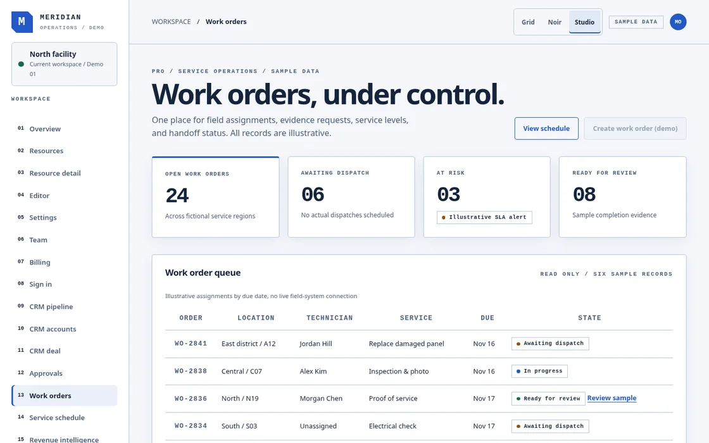

Operations and CRM
Record views, approval flows, work-order and dispatch scheduling concepts, plus sales and revenue reporting presentations. The examples contain fictional data.
PRODUCT RESEARCH / NOT FOR SALE
A private concept for developers who want reusable dashboard, CRM, operations and developer-tool layouts without committing their interface to a new component runtime.
NOT FOR SALE. Syntyr Pro is an unreleased private source candidate, not a purchasable product or preorder. There is no customer license, payment, release date, support contract or public Pro source download.
The preview request opens your email app; it does not submit or store information on this website. Include the stack you use and which screen types matter to you. This is a research conversation, not a reservation or purchase.

Try an actual free MIT dashboard example to evaluate Syntyr HTML/CSS without buying anything.
The candidate extends the separate Console Kit prototype to 25 application screen types and 75 static variants across Grid, Noir and Studio. It explores realistic application anatomy rather than promising working backend services.
Record views, approval flows, work-order and dispatch scheduling concepts, plus sales and revenue reporting presentations. The examples contain fictional data.
Technical settings, logs, integrations and governance layouts, designed to work with server-rendered HTML or your preferred frontend framework.
A separate local-only Go reference workflow demonstrates server form validation. Authentication, database persistence, tenant isolation, production billing and live data connectors are not included.
For additional visual direction, inspect the public Console Kit screenshots. They depict the smaller prototype, while the Pro work-order image above shows one additional Pro composition; neither is a verified gallery of every Pro screen. You can also try the published free HTML/CSS components, copyable page blocks and illustrative SaaS workflows.
Pro is being researched for Go templates, HTMX, Astro and other teams that value framework-neutral HTML and CSS. The proposed assets would be styling and markup references, not a replacement for application authorization, validation, or business logic.
If you only need CSS styles, buttons, forms and smaller page sections, the MIT-licensed Core and free block gallery already cover those needs. No premium purchase is necessary to use them.
See the commercial research scope and proposed prices, or explore the Studio concept if your primary interest is complete business websites as well as SaaS screens.